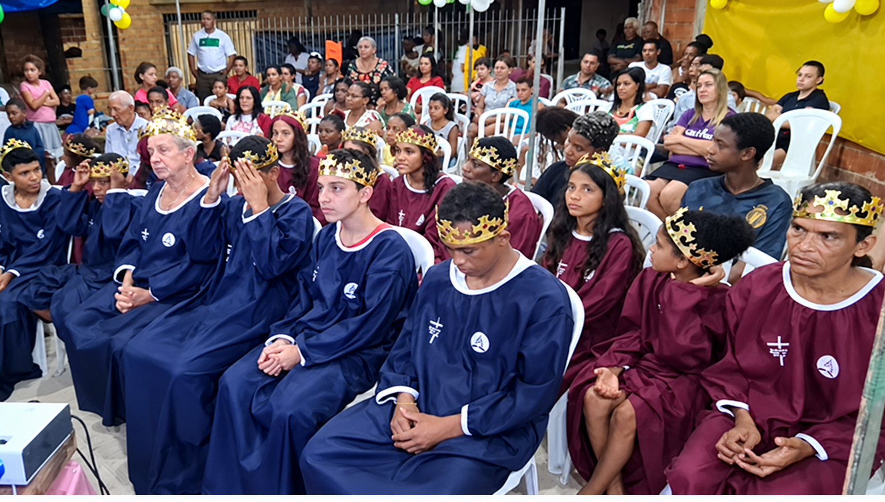
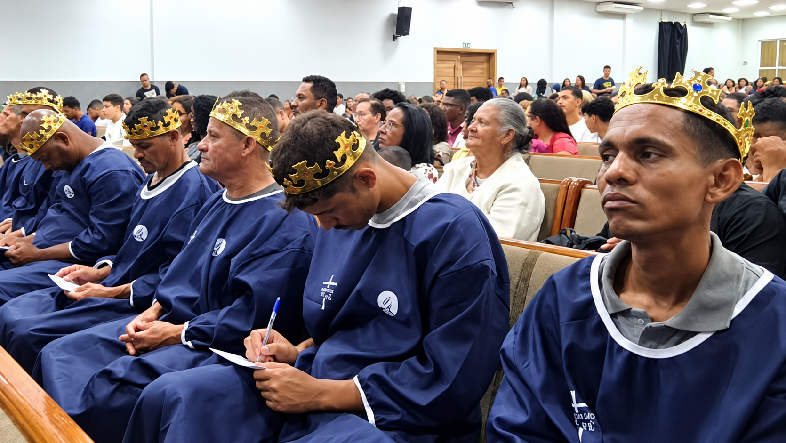
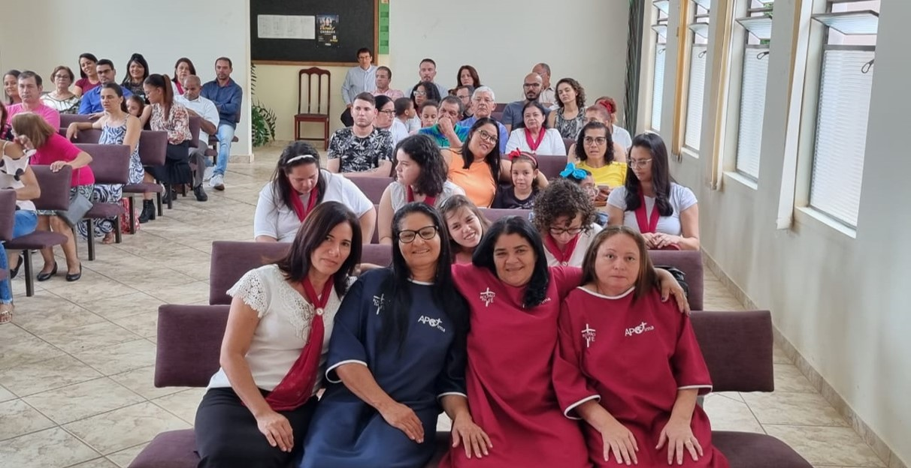
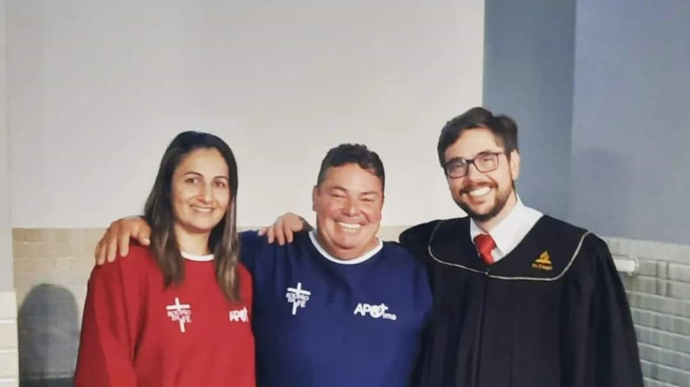

YouTube
YouTube
Semana de Oração
Marcos Camilo — IASD Alvorada
Uma noite de oração e palavra para quem se afastou — o caminho de volta.
Assistir no YouTube









01 — A história
Idealizado por Marcos Camilo em 2011, o Roupão da Fé nasceu do desejo de alcançar pessoas que se afastaram da igreja — oferecendo acolhimento, amizade e um convite para uma nova oportunidade de caminhar com Cristo.
Em 2011, um desejo simples tornou-se projeto: alcançar quem se afastou. Um roupão comum virou símbolo de que ninguém foi esquecido.
Antes de qualquer palavra, a presença. Conversa, escuta e companhia — sem julgamentos, no tempo de cada pessoa.
O gesto abre porta: uma nova oportunidade de reconstruir vínculos e retomar o relacionamento com Cristo, respeitando o tempo de cada um.
02 — Agenda do mês
Semanas de oração, cultos, encontros de entrega e operaciones de plantio. Confira o calendário e reserve a sua igreja — a agenda é atualizada todo mês.
03 — Pregações
YouTube
Semana de Oração
Uma noite de oração e palavra para quem se afastou — o caminho de volta.
Assistir no YouTube YouTube
YouTube
Culto de pregação
No maior seminário da UNAESP: entrega de roupões, música do Quarteto JASD e a palavra.
Assistir no YouTube YouTube
YouTube
Mensagem
Marcos Camilo na IASD Central Paulistana: uma palavra para quem passou por dias difíceis.
Assistir no YouTube YouTube
YouTube
Encontro · Dia 1
Marcos Camilo e o Quarteto JASD na abertura do encontro, em Itaquera.
Assistir no YouTube YouTube
YouTube
Semana do Roupão
Uma semana inteira dedicada ao Roupão da Fé na IASD de Osasco.
Assistir no YouTubeReunidos no canal do Roupão da Fé, com registros de cada campo.
Ver todas no YouTube04 — Quarteto JASD
O Quarteto JASD (Ministério JASD) é um grupo vocal e musical voluntário da Igreja Adventista do Sétimo Dia com mais de 35 anos de história dedicados à evangelização e ao louvor cristão por meio da música.
Um grupo vocal e musical voluntário da Igreja Adventista do Sétimo Dia, dedicado à evangelização e ao louvor cristão por meio da música — do rehearsal ao palco, levando a esperança a quem precisa ouvi-la.
O Ministério JASD é vinculado ao Roupão da Fé: é o som que acompanha a entrega de cada roupão, a pregação em cada igreja e a história de quem volta para casa.
Semanas de oração, cultos, encontros de entrega e operações de plantio. Cada agenda é uma oportunidade de levar o Roupão da Fé até quem se afastou da igreja.
Agendar
Conte o dia, o lugar e o formato do encontro. A gente confirma a agenda e prepara o repertório.
07 — Plantio de igreja
Reencontros, impactos de esperança e o começo de novas comunidades de fé. O Roupão da Fé não entrega só roupa: ele abre caminho para a igreja que ainda não existe.
 Reportagem
Reportagem
Reencontro · Montes Claros (MG)
A Igreja Adventista do Sétimo Dia realizou, em Montes Claros, mais uma edição do programa Reencontro, iniciativa voltada à aproximação e ao acolhimento de pessoas.
A programação foi marcada por momentos de amizade, histórias e reencontros. Entre os participantes estava Sheyla, que viveu uma experiência especial durante o evento.
Confira na reportagem como foi o Reencontro e conheça a história de Sheyla.
Assistir à reportagemPlantio em andamento · Capão Enéias (MG)
Capão Enéias, no norte de Minas, é uma cidade onde a Igreja Adventista chegou a existir — e fechou. Hoje não há presença adventista no lugar, e cerca de 150 ex-adventistas vivem ali, muitos deles sem nenhum vínculo com a igreja.
A porta se abriu durante o Impacto Esperança, a operação da MMN que distribui livros e mobiliza as igrejas do campo. Foi ali que o pastor apresentou Capão Enéias ao projeto: o terreno já estava sendo preparado para o plantio de uma nova igreja, e o Roupão da Fé aceitou o desafio de mandar dois obreiros para revitalizar a comunidade.
Desde então, o trabalho segue em andamento. Os dois obreiros acompanham as famílias, visitam os ex-adventistas que se afastaram e preparam o caminho para a igreja que vai nascer no terreno. A meta é simples e enorme ao mesmo tempo: reencontrar pessoas, cuidar de quem desistiu e deixar uma comunidade de fé em pé.
Registros do terreno e do plantio em Capão Enéias, norte de Minas.
Vidas alcançadas pelo projeto
38mil
pessoas levadas à decisão pelo batismo em todo o Brasil.
“O cristão que não se envolve com a salvação de pessoas é como um bombeiro que corre para um prédio em chamas preocupado com o quadro torto na parede.”
09 — Ajude a levar esperança
Seu apoio ajuda na aquisição de roupões e nos materiais usados nas ações missionárias do projeto. Contribua com qualquer valor pela chave Pix abaixo.
Chave Pix — telefone
Toque no botão para copiar a chave.
Beneficiário
Marcos Camilo da Silva
10 — Contato e participação
Quer conhecer melhor o projeto, participar de uma ação ou saber como sua igreja pode se envolver?